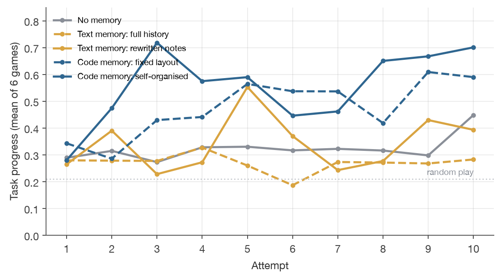
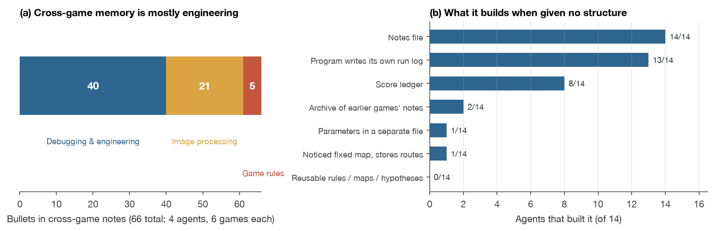
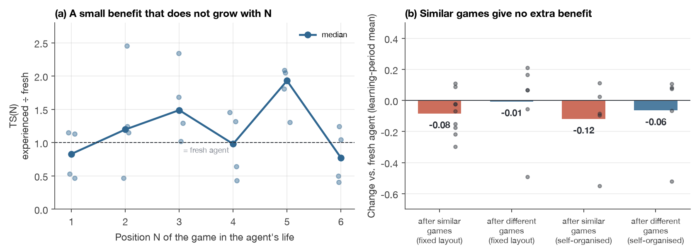
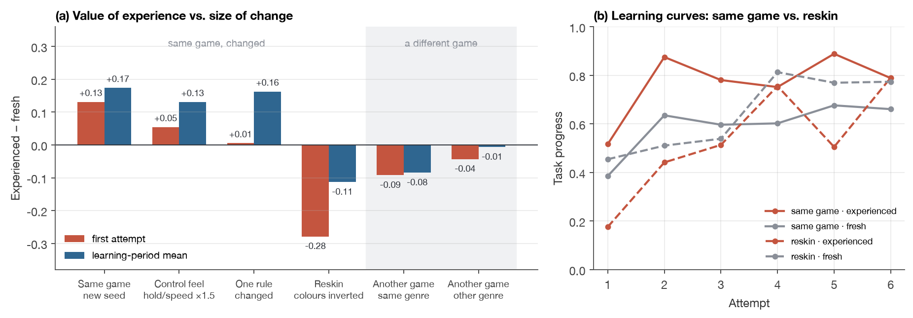
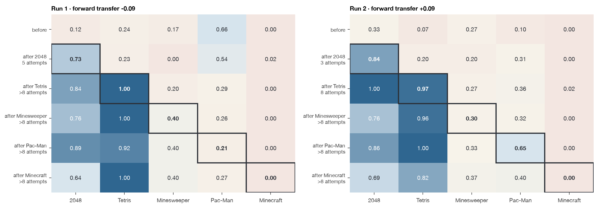
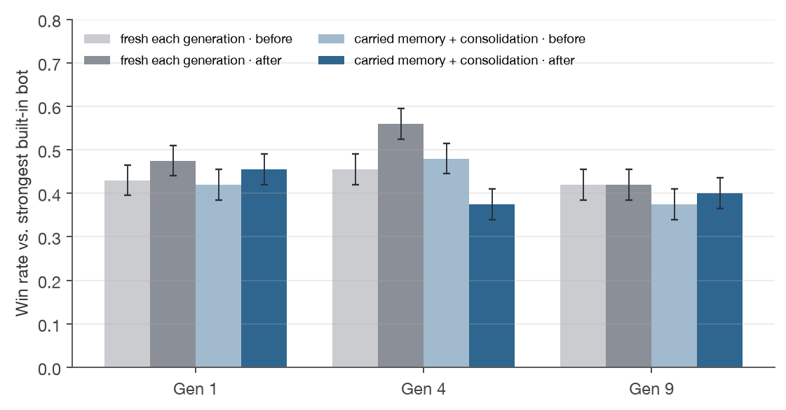

How far are we from a lifelong game agent?
Evidence from a self-programming agent on browser games and Pokémon battles
Abstract
A lifelong game agent should learn any new game from feedback alone, and should learn each new game faster than the last. We test how far current models are from this goal with an agent that never updates its weights. It keeps a persistent workspace in which it writes its own skill programs, notes and scoreboards. Every game receives the same prompts, with no per-game human engineering.
Across ten browser games (about 5,000 attempts) and Pokémon battles (3,400 battles) we find the following. The agent improves within a single game, but only when it writes its experience as executable code; text notes are indistinguishable from no memory. Given no memory structure at all, it invents the structures that within-game learning needs. What it learns, however, does not travel. The benefit of prior games is a constant that does not grow with experience, experience from games of the same genre gives no extra benefit, and in Pokémon, consolidating notes across generations brings no transfer either. A ladder of increasingly large changes shows that experience helps only while the screen looks the same: inverting the colours of an otherwise identical game turns experience from an asset into a liability.
Within-game self-improvement and self-organised memory are within reach today. But what the agent stores is either anchored to pixels or a restatement of what the model already knows; the layer of game rules in between is missing, and this is the main reason transfer fails. We close with a falsifiable next hypothesis: have the agent build and verify models of the rules, and make rules the unit that accumulates across games.
This is a revised version (2026-10-20). See Appendix A.4: one conclusion that came from a flaw in our experimental harness has been withdrawn, and affected readings have been replaced with unaffected ones.
1Introduction
Experienced human players have an ability that is rarely measured. Given a game they have never seen, they become competent within a few rounds, and they get faster at this the more games they have played. We call a system with this ability a lifelong game agent. It needs at least three capabilities:
- Improve within a game from the game's own feedback, not from rules a human wrote for it.
- Organise its own memory: decide what to keep and how, without a human designing data structures for each game.
- Carry experience forward: the cost of learning the N-th game falls as N grows, and games already learned are not forgotten.
Large models make it possible to try this without training any weights. A vision-language model can read a screen, write code and reflect on failure. Give it a workspace it can read and rewrite across attempts, and in principle it can bank each lesson and reuse it on the next game. Prior work has done versions of this inside a single world such as Minecraft (Voyager, Cradle and others), but mostly through structured game interfaces, and without measuring transfer between different games against agents that start from scratch.
This report uses a deliberately simple and general agent to ask: by the three criteria above, how far are we from a lifelong game agent today? Our contributions are:
- An evaluation protocol with zero per-game engineering: single-game learning, cross-game sequences, a similarity ladder, and a continual-learning performance matrix, each paired with a from-scratch control.
- Six empirical findings covering the three capabilities, each backed by mechanistic evidence from the code and notes the agent wrote.
- A diagnosis of the gap: stored experience is either tied to pixels or common knowledge, and the layer of game rules is missing; and a falsifiable next hypothesis.
2Environment and metrics
We use the GameWorld suite of browser games. At every step the agent sees one screenshot and chooses one of a handful of key actions registered for the game. The game is paused while the model thinks, so inference speed does not affect play. An attempt is 400 steps, and each action lasts 0.1 to 0.2 seconds. We selected ten games that score reliably and differ in how they are played, and grouped them into four genres:


Task progress. Each game has a task goal. GameWorld computes progress toward it from the game's internal state, on a scale from 0 to 1, where 1 means the goal is met. The agent never sees this number, only the score shown on screen. Random play is not near zero: it averages 0.40 over all scoreable tasks, so every number in this report should be read against the random level.
Hidden seeds. The agent learns on one set of random seeds. Final performance is measured on a separate set it has never seen, with learning switched off.
Environment fixes. In 31 of GameWorld's 165 tasks, the scoring rule refers to a field the game never emits, so every policy scores 0. We mapped these fields to the equivalent fields the games do emit, and log the mapping with every run.
3The agent: a player that programs itself
The agent's entire state is a directory that it reads and writes itself; no human edits it. The directory holds four things: cross-game notes, per-game notes, a shared code library that any game's skill can import, and, for every game, all versions of its skill program with a scoreboard for each.
Three design constraints hold throughout. First, feedback is limited to what a human player sees: the on-screen score and deaths. The task-progress metric is hidden from the agent. Second, no per-game engineering: every game gets identical prompts. Third, we never prescribe the content of memory. We may change when the agent reflects, what it can see and how much it may store, but we never tell it what to remember. If it does not discover game rules on its own, that is itself a result.
For comparison we also ran random play; a memoryless agent (a newcomer every attempt, with the model choosing every action); two forms of text memory (the full history of all attempts in context, or a compact note rewritten after each attempt); and two forms of code memory (the fixed layout above, and a variant in which only the entry program play.py is specified and the agent organises everything else).
4Results
We report six findings in the order of the three capabilities. The first two concern improving within a game and organising memory; the last four concern carrying experience forward. All numbers use only readings that are unaffected by the known harness flaws (Appendix A.4): the scores of versions actually played during learning, first-attempt scores, and experiments rerun after the fixes.
4.1Within a game, only experience written as code produces improvement
When the agent plays a single game for 10 attempts, every memory form starts between 0.26 and 0.34 on the first attempt. From there, both forms of code memory rise attempt by attempt, to learning-period means of 0.48 and 0.56, with 83% to 92% of all steps decided by programs the agent wrote. Both forms of text memory and the memoryless agent stay between 0.27 and 0.34, not far above random play at 0.21.

The reason is straightforward. Knowledge in a timing game is "how far is the obstacle, how fast is it moving, when should I press". It is only useful as a program that runs on every frame; written as a note, the model still needs about a second per step to read the screen, and the moment has passed. Wolf3D is the only game where text notes clearly beat no memory (learning-period mean 0.53 against 0.43). That game is about finding enemies, finding doors and exploring: decisions rather than reflexes.
Below is the core of the skill the agent wrote for Chrome Dino. Over the next five attempts of 400 steps it did not call the model once, and each attempt cost about two cents:
# Chrome Dino skill written by the agent (excerpt; 131 lines in total) gray = _gray(frame) dark = gray < 118 # dark pixels = dinosaur, cacti, ground ground = _ground_row(dark, W, H) # find the ground line ... d = prev - obs_l # obstacle shift between frames = speed spd = d if spd is None else 0.6 * spd + 0.4 * d dist = obs_l - dino[1] thr = 2.2 * spd # jump lead grows with speed if dist <= thr: return "jump"
The code holds two kinds of knowledge at once: a threshold tied to how the screen looks (red: "pixels darker than 118 are objects") and a rule of the game that does not depend on the screen (blue: "jump earlier the faster things move"). Sections 4.4 and 4.5 show that this entanglement determines how far experience can travel.
4.2Given no memory structure, the agent builds what within-game learning needs
We ran 14 agents whose only convention was the entry program play.py, with no structure for notes, a library or a scoreboard. All 14 created notes; 13 rewrote their own program so that it writes a run log during play for the next reflection to read; 8 kept a score ledger. Self-written run logs were not part of the fixed layout we designed. These agents performed no worse than the fixed layout (learning-period mean 0.56 against 0.48).

What did not appear matters as much. No agent built a library of rules reusable across games, a map, or a list of hypotheses to test. Within a single game the model already closes the engineering loop of recording, evaluating and rolling back on its own. A carrier of knowledge across games would need a different pressure or a different capability.
4.3The cross-game benefit is constant, and similar games give no extra benefit
We had agents play six games in a row and paired each game with an agent that started that game from scratch. We measure transfer with the learning-efficiency ratio TS(N): on the N-th game, the experienced agent's learning-period mean task progress divided by that of the fresh agent. If the agent learns faster over time, TS(N) should rise with N.

Experience helps a little, but the advantage is the same on the second game as on the sixth; it does not accumulate. Experience from similar games gives no extra benefit: agents that had played only similar games scored 0.08 below a fresh agent on the learning-period mean with the fixed layout (2 of 9 games positive) and 0.12 below with the self-organised layout (2 of 5 positive), and their first attempt was lower too (−0.09). We tried three mechanism changes that do not prescribe content: running an "inherited" and a "from scratch" skill side by side in the first attempt of each new game and showing the agent both scores; capping total memory so the agent must choose what to keep; and removing all structure. None changed this result.
4.4Why: what it remembers across games is almost entirely engineering
Figure 4(a) gives the direct reason. Of the 66 cross-game bullets, about 40 are debugging and engineering practice, about 21 are image-processing tools, and only 5 are rules of a game. Three bullets from one agent's cross-game notes, in its own words (lightly abridged):
"Change one lever per attempt; keep the proven path bit-identical; revert if worse."
"A syntax or import error makes the whole skill dead. '0% skill decided' is a red flag."
"In a scrolling game, the number of steps a fixed-width object stays in the danger zone is width divided by speed."
The first two help the agent debug faster in any game. It did carry them to the next game, which probably explains the median TS of 1.27; they are complete after one or two games, so the benefit stops growing. The third is a genuine game rule, and exactly the rule that Chrome Dino and Geodash share. But it stayed in the notes and never became reusable code. On every new game the agent wrote a fresh perception-plus-decision program like the one in Section 4.1.
The code also explains why similar games hurt. On Chrome Dino the agent wrote a module that finds the ground and obstacles and put it in the shared library. On Geodash it imported that module to write its first skill, which scored 0.30 on the first attempt; a fresh agent that let the model read the screen scored 0.49. What it inherited was perception code, and perception is exactly where the two games differ most.
4.5Experience reaches only as far as the screen stays the same
If different games are too far apart, how small a change can experience survive? We built a ladder of increasingly large changes to the same game. We compared an experienced agent, whose workspace from 10 attempts on the original game was copied over unchanged, with a fresh agent, over 6 attempts each. The rungs were: the same game with a new seed; a change in control feel (key hold duration or game speed × 1.5); one changed rule (for example, enemies in Wolf3D have three times the health); and a reskin (the screenshot's colours are inverted and the channels rotated, game logic unchanged, and the written rules withheld). Three games and two seeds gave 87 agents in total.


The ladder draws a clear line. On the three rungs where the screen is unchanged, experience raises the first attempt by 0.01 to 0.13 and the learning-period mean by 0.13 to 0.17. Once the screen changes, experience turns from an asset into a liability. After the reskin the experienced agent's first attempt scored 0.18 against the fresh agent's 0.45, with 5 of 6 pairs negative; the learning-period mean was 0.11 lower, also 5 of 6 pairs negative. Its own revision notes tell the story. First it switched back to "champion v2"; then it wrote that "v2's fixed dark-mask (gray<118) selects the black background on the now-dark-mode page, so no jumps are ever emitted"; only on the third attempt did it produce a mask that works in both light and dark renderings. The perception code it stored, and its record of which version was the champion, both broke at once. The scoreboards reveal a side effect: experienced agents switched back to their "proven champion" version in 81 of 108 attempts, fresh agents in 18. Experience made the agent explore less.
The one kind of experience that survived change was about decisions. When enemies in Wolf3D had three times the health, the experienced agent's first attempt was still 0.42 higher, because it had stored the map, the doors and a route for clearing enemies, all of which remained valid. One more observation: when Chrome Dino was changed so that points accrue only while ducking, none of 12 agents, over 72 attempts, systematically tried ducking. The agent does not explore to discover that the rules have changed.
Placing the ladder and Section 4.3 on one chart (Figure 7a), the value of experience falls as the change grows and drops below zero at the step where the screen changes. A different game of the same genre also looks different, which explains why similar-game experience did not help in Section 4.3.
4.6Measured again under cleaner conditions: still no transfer
Each of the previous results measures one aspect. To look at lifelong learning as a whole, we adopt the standard evaluation of continual learning (Lopez-Paz & Ranzato, 2017). The agent learns a chain of games one after another. After each game, a frozen copy of the agent is tested on every game in the chain, which yields a performance matrix. We add the number of attempts it took to learn each game as its cost.
| Game A | Game B | Game C | Game D | Cost to learn | |
|---|---|---|---|---|---|
| Before | 0.60 | 0.60 | 0.60 | 0.60 | |
| After A | 0.80 | 0.65 | 0.65 | 0.65 | 300 |
| After B | 0.79 | 0.80 | 0.66 | 0.66 | 200 |
| After C | 0.80 | 0.80 | 0.80 | 0.67 | 100 |
The table shows what an ideal lifelong learner would look like (illustrative numbers). The diagonal (dark) is the level reached. The upper right (light blue) is games not yet learned getting better because of the games before them, i.e. forward transfer. The lower left (light red) is whether learned games later lose ground, i.e. forgetting. The cost column should fall.
A chain of strategy games. We chose five games that do not test reflexes: 2048, Tetris, Minesweeper, Pac-Man and Minecraft. Three of them had targets that were too low (random play reaches the original 2048 target), so we raised them (2048: 4,000 points; Tetris: 1,500 points; Minesweeper: 10 correct flags), bringing random play down to 0.2–0.5. At most 8 learning attempts per game, "learned" meaning two consecutive attempts at 0.8 or above; each cell measured with 3 attempts on hidden seeds; two runs.

2048 and Tetris were learned (0.84 to 1.0); Minesweeper stayed at 0.3 to 0.4, about the level of random play; Pac-Man was not learned; Minecraft stayed at 0 throughout. What gets learned is still what can be written as a fixed-rule program; games that need step-by-step deduction, route planning or 3D exploration were not learned. Forward transfer was −0.09 and +0.09 in the two runs. Learned games showed no deterministic loss by the end of the chain: the same program version on the same seeds already varies from 0.38 to 1.0 per attempt, and the observed changes are within that range.
Pokémon across generations. The browser games share little and first require reading the screen. To measure again under conditions as favourable to transfer as we could find, we moved to Pokémon battles on the open-source simulator Pokémon Showdown. Generations differ in their Pokémon and mechanics but share a strategy (type matchups, when to switch, reading the opponent); the state is given as text, so there is no perception burden; and a battle takes seconds to a minute at about $0.003, so win rates can be measured over hundreds of battles. The agent reads the state and its notes and picks one action per turn; it plays 5 rounds of 10 battles per generation and rewrites that generation's notes after each round. In the lifelong arm the notes are carried forward, and after each generation the notes of all generations are laid side by side and consolidated into global notes. The opponent is the strongest built-in heuristic bot; each condition is measured with 100 battles before and after learning; two runs per arm.

No learning happened even within a generation: the fresh arm went from a 0.44 win rate before learning to 0.49 after, the lifelong arm from 0.43 to 0.41, both near the noise level. Before learning a new generation, the lifelong arm had no advantage over the fresh arm either (Gen 4: 0.48 against 0.46; Gen 9: 0.38 against 0.42). The notes were correct, but they restated what the model already knows, such as "compare both sides' HP, speed and typing to see who can knock out whom; if at a disadvantage, switch to a teammate that resists". Writing this down adds no information, so it does not change decisions. The lifelong arm wrote as much in its own global notes: practice "worsened gen1/gen4 and did not improve gen9", so old patterns should be treated as weak hypotheses.
5Discussion: how far are we?
| Capability a lifelong game agent needs | Status | Evidence |
|---|---|---|
| Improve within a game from feedback | Yes, if experience is written as code | 4.1 |
| Organise its own memory | Yes, within a single game's engineering loop | 4.2 |
| Learn a game to a high level | Partly: games that can be written as fixed rules (2048, Tetris), not those needing deduction, planning or 3D exploration | 4.6 |
| Carry experience to the next game | A constant benefit that does not accumulate; zero under cleaner conditions (Pokémon) | 4.3, 4.6 |
| Store game rules independent of the screen | No; rules stay in notes, or are common knowledge | 4.4, 4.6 |
| Keep experience valid when the environment changes | Only if the screen is unchanged; decision knowledge is the exception | 4.5 |
| Explore to discover changed rules | No | 4.5 |
| Learn faster over time | No | 4.3, 4.6 |
| Learn new games without forgetting old ones | After fixing the harness, no forgetting beyond measurement noise | 4.6 |
Of the three capabilities, the first two are within reach; the third breaks at a specific point: what the agent stores is either too specific or too generic, and the layer in between is missing. Too specific is perception code tied to pixels ("pixels darker than 118 are objects"), which breaks when the screen changes. Too generic is knowledge the model already has (the Pokémon notes), which adds no information. The engineering lessons that do travel ("change one thing at a time") are complete after one or two games. The missing middle layer is game rules and mechanics: "touching spikes kills you", "jump earlier the faster things move", "water beats fire". This layer is non-trivial and reusable across games, yet it was almost never stored on its own. A second reason is a noisy learning signal: the agent only sees the final score of each attempt, while the same code already varies from 0.38 to 1.0 per attempt, so it can hardly tell whether a change helped.
The distance to a lifelong game agent is not that it cannot learn. It is that what it learns either holds only in the pixels it has seen, or is something it already knew.
Relation to prior work. Humans rely on priors too: when a game's object semantics and visual consistency are removed, human completion time rises from about 2 minutes to over 20 (Dubey et al., 2018), the same phenomenon as our reskin result. On twelve Unreal Engine games, OmniGameArena finds that a skill's gain on the original task does not predict its transfer to held-out variants; in one game the model with the largest original gain (+201%) transferred negatively to all three variants. On text games with unfamiliar rules, Learn2Play Bench finds that keeping complete records of actions and feedback works better than summarising experience into rules, and that human players try more varied strategies and repeat actions less than agents, which echoes the "stick with the champion, do not explore" behaviour we observe. In text environments, the memory mechanisms with evidence of cross-environment transfer are contrastive distillation of sub-task lessons from successful and failed trajectories (ExpeL, ReasoningBank) and memory consolidators trained on downstream task reward (Auto-Dreamer).
Next: make rules the unit that accumulates. Humans learn games quickly mainly by building a model of the rules (what kills you, how things move) and reasoning with it, rather than recording what to press. Prior work shows this route is viable: a theory-based agent that learns each game's rules as a small program, designs probes to test its guesses and plans with the rules approaches human learning efficiency in simple grid games (Tsividis et al., 2021); WorldCoder has a language model write the environment's rules as an executable world model, which is far more sample-efficient than learning a policy and transfers across environments by editing code; and on ARC-AGI-3, a benchmark of how fast an agent learns games with novel rules, executable world models have also made progress (2026). We therefore propose a falsifiable hypothesis: if the agent predicts the next state at every step, writes the rules as a runnable model, designs probes to test its guesses, plans with the model, and stores verified mechanics in a cross-game library, then later games will require fewer new rules to be learned, and the cost of learning will fall. This addresses both problems at once: prediction error is right or wrong at every step, far denser than the final score, and rules are the missing middle layer. If later games still do not get cheaper, the problem lies deeper, for example in the model's inductive ability, or experience needs to be trained into the weights. We design only these learning mechanisms and never tell the agent any specific rule.
6Limitations
- Sample size. Most browser-game conditions have one or two agents per cell; two agents under identical conditions can differ by a factor of two, and single attempts vary noticeably. Each conclusion's direction holds across five to nine games or across most pairs; individual values are reliable to roughly ±0.15. Pokémon cells use 2 × 100 battles, with a standard error of about 0.035.
- One model. Whether a stronger model would abstract game rules on its own is the most direct untested variable.
- Short lives. Six to ten attempts per game and at most six games in a row. This is enough for adaptation, not for mastery.
- Pokémon tested text notes only. A code carrier (for example, a damage calculator with look-ahead search) has not been tested on Pokémon.
- Notes of fixed-layout agents are truncated. About 70% of per-game notes and 38% of cross-game notes exceeded their length limit at the last write and lost their endings, which often held open questions and next steps. "No hypothesis lists" therefore holds only for the self-organised agents, whose files are not truncated. The Pokémon experiment no longer truncates silently.
- Scope of games. Pausable browser games and turn-based battles only. Real-time, multiplayer and long-horizon commercial games are out of scope.
AAppendix
A.1 Scale and cost
| Item | Value |
|---|---|
| Browser games: attempts | about 5,000; about 1.2M environment steps |
| Pokémon: battles | 3,400 |
| Total API cost (at peak prices; an upper bound) | about $345 |
| One browser-game attempt, model decides every step | $0.05–0.25, 8–15 min |
| One browser-game attempt, skill program in control | $0.01–0.03, 2–3 min |
| One Pokémon battle | about $0.003 |
A.2 Implementation details
- Per-step decisions run with the model's reasoning off (about 1.2 s per step). Reflection after each attempt uses medium reasoning, retried at lower effort if reasoning exhausts the output budget and returns an empty reply.
- Skill programs run in a separate process with a 2-second limit per frame; on error or timeout, the model decides that step.
- Control-feel changes are applied in the key-execution layer; rule changes are patches that generate local copies of the game; reskins transform the screenshot colours and leave game logic untouched.
- Chain experiments: learning stops after two consecutive attempts at the threshold or after the 8th attempt, with no reflection after the last attempt; when a game has been learned, the shared library is frozen for that game's skills.
- Pokémon: one model call per turn; over-long notes are first returned to the model to shorten, and are only cut, with a record, if still too long.
A.3 GameWorld fixes
In 31 of GameWorld's 165 tasks, the scoring rule refers to a field the game never emits, so every policy scores 0. We mapped these fields to the equivalent fields the games do emit, and log the mapping with every run.
A.4 Revision notes (2026-10-20)
Later experiments uncovered three flaws in our experimental harness. This version is revised accordingly:
- Withdrawn: "learning new games breaks old ones". The previous version reported one case of forgetting: a module written into the shared library while learning Chrome Dino dropped the old Snake skill from 1.00 to 0.33. The cause was two games' modules sharing a name, a flaw in our harness rather than a property of the agent. After the fix (freezing a copy of the shared library for each game once it is learned), no forgetting beyond measurement noise appeared.
- Unaffected readings only. Earlier experiments let the agent reflect once more after its last learning attempt and then measured a "final score" on hidden seeds, which could measure a new version that had never been played. Figures 3, 5(b) and 7 now use the scores of versions actually played during learning, and first-attempt scores. The direction of every conclusion is unchanged; some values changed: code-memory single-game scores from 0.53 / 0.61 to 0.48 / 0.56; "after similar games" relative to a fresh agent from −0.12 to −0.08; the effect of text notes in Wolf3D from 0.83 to 0.53 (no memory: 0.43).
- Chain experiment rerun. The previous chain matrices came from runs before the fixes; this version uses the strategy chain rerun after the fixes (Figure 8) and adds the Pokémon experiment (Figure 9).
- Scope of "no hypothesis lists". Fixed-layout agents' notes were truncated, and the cut endings often held hypotheses to test, so this observation holds only for the self-organised agents, whose files are not truncated.
References
- Ouyang et al. GameWorld: Towards Standardized and Verifiable Evaluation of Multimodal Game Agents. arXiv:2604.07429
- Wang et al. Voyager: An Open-Ended Embodied Agent with Large Language Models. arXiv:2305.16291
- Tan et al. Cradle: Empowering Foundation Agents Towards General Computer Control. arXiv:2403.03186
- Lopez-Paz & Ranzato. Gradient Episodic Memory for Continual Learning. arXiv:1706.08840
- Dubey et al. Investigating Human Priors for Playing Video Games. ICML 2018. arXiv:1802.10217
- Tsividis et al. Human-Level Reinforcement Learning through Theory-Based Modeling, Exploration, and Planning. arXiv:2107.12544
- Tang, Key & Ellis. WorldCoder, a Model-Based LLM Agent: Building World Models by Writing Code and Interacting with the Environment. NeurIPS 2024. arXiv:2402.12275
- ARC Prize Foundation. ARC-AGI-3. arXiv:2603.24621
- Executable World Models for ARC-AGI-3 in the Era of Coding Agents. arXiv:2605.05138
- Zhao et al. ExpeL: LLM Agents Are Experiential Learners. arXiv:2308.10144
- Ouyang et al. ReasoningBank: Scaling Agent Self-Evolving with Reasoning Memory. arXiv:2509.25140
- Ye et al. Auto-Dreamer: Learning Offline Memory Consolidation for Language Agents. arXiv:2605.20616
- Lin et al. OmniGameArena: A Unified UE5 Benchmark for VLM Game Agents with Improvement Dynamics. arXiv:2606.09826
- Li et al. Learn2Play Bench: How Well Do LLM Agents Learn from Experience in Unfamiliar Environments? arXiv:2610.08215
- Pokémon Showdown (open-source battle simulator), github.com/smogon/pokemon-showdown; poke-env, github.com/hsahovic/poke-env
Game screenshots come from third-party web games included in GameWorld; all rights belong to their owners, and they are shown here for research illustration only. The game copies used for rule changes are generated locally by patch scripts and are not distributed with the code. Pokémon is a trademark of Nintendo, Creatures and Game Freak; this work uses only the open-source battle simulator, for research.